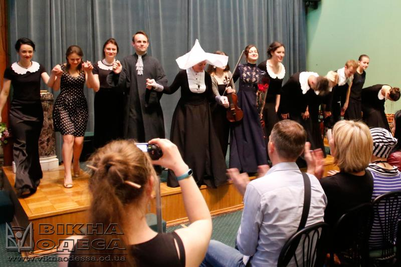

Opera Vo Blago
«Opera Vo Blago»- это театр-благотворительный проект, творческое пространство, призванное помогать нуждающимся...
Именно так, бессменно, уже 5 лет подряд начинаются все наши концерты и перфомансы. Но сегодня я,с присущим мне пафосом в последнее время, "властью, данной мне" и со спутанным сознанием человека,спящего 2.5 часа:)) хочу сказать, что,на самом деле «Opera Vo Blago»- это кучка ненормальных,которые, нещадно тратя свое личное время(проект,по сути, - хобби каждого из нас-по велению души), деньги(у нас нет спонсирования),душевные силы и даже здоровье,ради того,чтобы делать то,во что мы верим,то,что любим.
В проекте не было,нет и не будет случайных людей-здесь только те, у кого есть любимое дело и они счастливы,занимаясь им, они получают истинное удовольствие от этого. Здесь те,кто с огромной радостью поют и играют,быть может,не имея возможности пока что выступать на больших сценах.И все,что они делают-несет в себе энергию любви и некое "финансовое благо" людям,требующим помощи( и пускай за 5 лет ,проведя 30 оперных перфомансов,более 70 концертов(со сбором средств для тяжелобольных детей,стариков и животных ,пострадавших от человеческой жестокости);в том числе -концерты в рамках благотворительных акций,выставок),4 сказки для онкобольных деток, мы собрали всего лишь 94 тысячи гривен...)))
Я хочу сказать каждому из вас СПАСИБО за все то,что вы делали и делаете: за ,порой, многочасовые изматывающие репетиции(иногда в очень стесненных условиях и в очень короткий срок),за личное потраченное время,за щедрость,за изобретательность и креатив,за смелость,силу духа,за ваши улыбки и неугасимую веру в проект!Хочу поблагодарить за то,что в любом состоянии,не смотря на,порою, жесткие осуждения в сторону проекта,зависть( и такого добра хватало:)),не боясь оценок и сравнений,вы выходили и выходите на сцену, и там - становитесь собой!Вы творите!Вы дарите свое сердце, свою музыку! Каждый,как умеет,как научился,но всегда- абсолютно искренне!Именно это объединяет нас всех-искренность,чуткость и любовь к музыке и к людям!:)))Вы-НАСТОЯЩИЕ,такие,как есть и за это я вас обожаю,мои друзья! Желаю вам беречь в себе это и пронести через всю жизнь!Огромных вам творческих успехов,личных побед и ЛЮБВИ во всем!!!